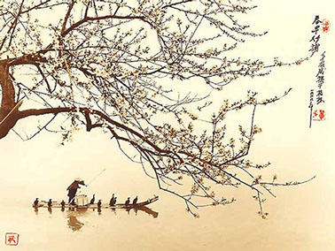
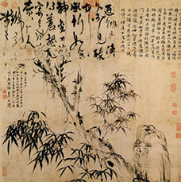
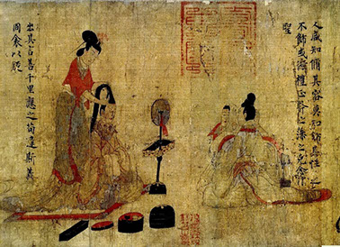
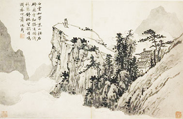
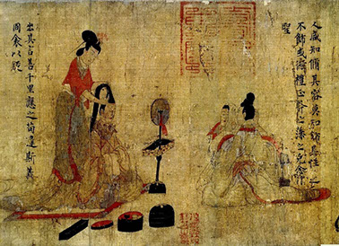
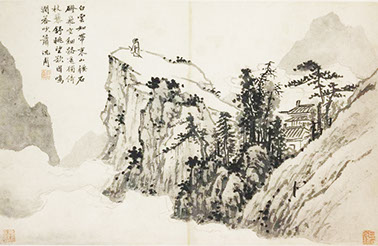

Ancient Asia's Design Movement
Introduction
![The ancient Far Eastern era played a big part in the early development of design. Although the Far Eastern Era did not have a true design movement; it was known for it’s innovative creations that have become a standardized part of design throughout history. Asian culture created one of the first and longest surviving writing systems, as well as the creation of writing paper, print, calligraphy, and many other things like playing cards. The Far East was also one of the earliest cultures to use pictograms, ideograms, and logograms.](../images/u701-4.png)
History
![One of the earliest forms of ideograms was the first Chinese characters. “Zi” was one of the first writing systems created. It is said that Cangjie was sent by the Yellow Emperor to create a writing system after being dissatisfied with the previous “rope knot tying” method of recording information. After the creation of the newly found writing system, the early stages of calligraphy started to take form. Many painters would use calligraphy for poems within their paintings. “The Four Treasures of the Study” was an expression used to denote the brush, ink, paper and ink stone used in East Asian calligraphic traditions. Today, paper is such a common thing that it goes unrecognized as a breakthrough in design. Paper was invented in ancient China around 206 BC - 220 AD by Cai Lun. Before paper, documents were written on several different things such as stone tablets, bamboo, clay, metals, and even bones. East Asian also introduced many ways of printmaking. Early print was done by the simple method of laying a piece of paper on a carved and inked block and then rubbing its back to transfer the ink. In the 11th century, a man named Pi-Sheng developed type characters from hardened clay, creating the first movable type. Later around 1400 AD, China and Japan develope type characters from metal.](../images/u703-11.png)
Artist


Cangjie
Gu Kaizhi
Katsushika Hokusai
Zheng Sixiao
Gallery
 
11 - 11
<
>
References
![http://depts.washington.edu/chinaciv/painting/4schyuan.htm
http://www.katsushikahokusai.org
http://en.wikipedia.org/wiki/Cangjie
http://www.britannica.com/EBchecked/topic/324080/Gu-Kaizhi
http://en.wikipedia.org/wiki/Gu_Kaizhi
http://www.citrinitas.com/history_of_viscom/ideograms.html
Megg’s History of Graphic Design
http://en.wikipedia.org/wiki/Four_Treasures_of_the_Study
http://en.wikipedia.org/wiki/Calligraphy#History_2
http://en.wikipedia.org/wiki/History_of_Eastern_art
http://www.historyworld.net/wrldhis/PlainTextHistories.asp?ParagraphID=fmf
http://www.prepressure.com/printing/history](../images/u704-26.png)
Ancient Asia's Design Movement
Introduction
History
Artist
Cangjie
Gu Kaizhi
Katsushika Hokusai
Zheng Sixiao
Gallery


11 - 11
<
>
References